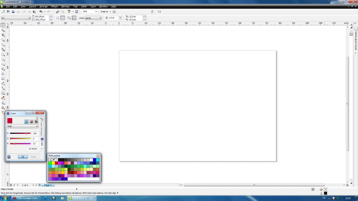

Сбор ошибок CorelDRAW версии 15.2.0.661
Sancho / 22.02.2010, 17:36/00:41
Форум:
Если вы нашли ошибку в CorelDRAW X5, расскажите о ней в этой теме, и если она подтвердится, то я обязательно сообщу о ней разработчикам.
Правила:
1. Обязательно указать операционную систему (XP, Vista, 7...).
2. Расписать поэтапно, как повторить ошибку.
Разработчики, конечно, снова насовали в дистрибутив ряд новых и неплохих функций, только вот исправлять старые недочеты не стали.
Во-первых, при записи цветоделенного постскрипта текст с градиентной заливкой, не закривленный, просто пропадает, остается лишь первая буква слова. Во-вторых, при печати дуотонов монотонная растровая картинка (черная), положенная на пантоновую плашку, печатается без выбивки, то есть как бы оверпринтом (причем такого атрибута картинке никто не задавал). Это видно только в готовом PS (PDF). В окне предпросмотра же все нормально. В-третьих, изогнутые (и вообще не четко горизонтальные и вертикальные) полупрозрачные контуры в тех же PS и PDF имеют странные зазубренные, рваные края. Так они выглядят и на оттисках.
И все эти "прелести" перекочевали из 14 версии, с которой мне приходится бороться и дальше. Чем занимаются эти "разработчики" и для кого (чего) создают свой продукт — непонятно.
Вообще, последняя удачная версия - это девятка (правда, тоже исключительно после двух сервис-паков ). Вот там этих проблем не было. по крайней мере. Но с ее выпуска прошло уж 10 лет, она все же устарела. А теперь, после 15-й версии (которой я так ждал) я разуверился, что Корел выпустит что-либо вразумительное и впредь...
1. ничего не пропало, PS получился нормальный.
2. если я правильно понял, то тоже нормально (с выбивкой)
3. это походу извечный глюк, который никогда не поправят, но я об этом им напишу
У меня установлен не релиз, так что возможно с выходом СП, часть твоих проблем решится.
незнаю, имеет ли значение вот настройки рабочего пространства Корел (Докер цвета и
Обджект Менеджер висят сбоку) , дефолтная палитра RGB... вобщем я теряюсь, в чем может быть дело!.. не могу пользоваться очень важным инструментом для меня... было проверено на нескольких компах!!!!!!!... ЧТО ЗА ЧЁРТ!!!!???..........
http://cdrpro.ru/_fr/2/6391221.png
всмысле расположения панелей (бага с пипеткой там конечно не было)

В общем, даже если не поможет, то в СП это бага скорее всего не будет.
Страницы